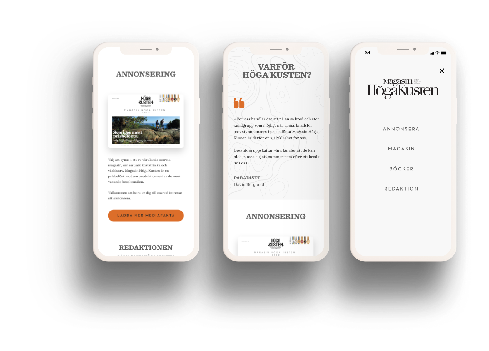

Magasin Höga Kusten
Client
Magasin Höga Kusten
Role
UX/UI Design
Tools
Adobe XD, Illustrator, Zeplin, WordPress
DEFINING THE PROBLEM
Magasin Höga Kusten is one of Sweden's major destination magazines about one of the world's most unique coastal areas. Magasin Höga Kusten wanted a new design for their website. It should include a section for reading their latest magazines, be possible to show their books, testimonials about the High Coast, a section about ads and the editorial office.
UNDERSTANDING THE USERS
Which information is the most important for the user, the sections should be organised after importance. Since it is a one-page website all information must be reached on that page. The menu must be clear and relevant to guide the user on to the right section, to avoid the user from scrolling down and up searching for something.
IDEATION
During the ideation part of the design process, generating new ideas and possible solutions was done based on the information from the previous steps, such as user research and analysis of the problem. Brainstorming and sketching were used as techniques to encourage creativity and explore different ideas. The ideas generated were evaluated against the requirements and user needs, considering factors such as feasibility, usability, and desirability.
After evaluating the ideas, the most promising ones were selected and refined into a Lo-Fi prototype. The Lo-Fi prototype includes wireframes that represent the basic structure and functionality of the design.
FINAL SOLUTION
The website for Magasin Höga Kusten was developed using WordPress, with the help of Elementor and Zeplin. Elementor is a popular page builder plugin for WordPress, which makes it easy to create custom layouts and designs for web pages. Zeplin, on the other hand, is a design collaboration tool.
To see the live version of the website, please visit the following link: magasinhogakusten.com
WHAT I LEARNED
Undertaking the Magasin Höga Kusten website development project provided me with a range of valuable opportunities to develop and refine my skills in key areas.
One of the most significant areas in which I gained experience was in iterative prototyping. Through working closely with the Magasin Höga Kusten team, we were able to identify areas where the initial design needed improvement and refine it through multiple iterations.
Another critical skill that I developed throughout the project was WordPress development. As the website was developed using WordPress, I gained a deeper understanding of how to leverage its many features and functionalities to create custom websites that meet clients' needs.